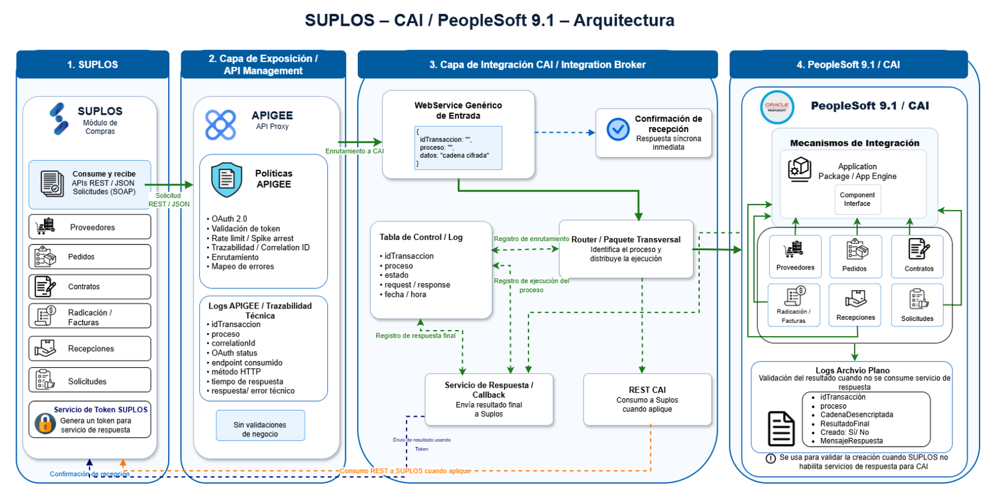
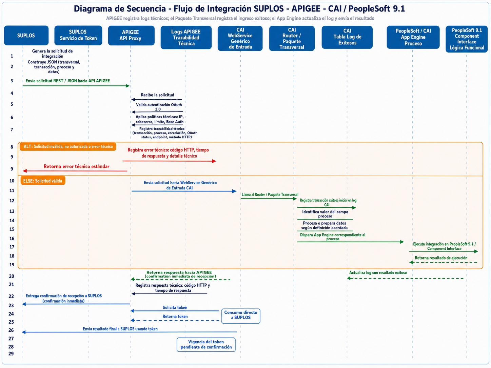

Línea base documental
Línea base oficial: el portal trabaja con 17 integraciones distribuidas en Radicación, Contratos, Pedidos, Recepciones y Proveedores.
Documentación técnico-funcional de las 17 integraciones oficiales entre SUPLOS y CAI / PeopleSoft 9.1.
La versión 1.8 conserva las 17 integraciones oficiales y actualiza el catálogo de códigos de respuesta, los ejemplos JSON y los mapeos con base en los archivos Excel vigentes.
Imágenes del documento de arquitectura y patrón transversal de integración.
Página 15 del diseño de arquitectura.

Página 18 del diseño de arquitectura.

{
"idTransaccion": "UUID",
"proceso": "CODIGO_INTEGRACION",
"datos": "contenido-cifrado"
}Los códigos y descripciones del resultado se proponen dentro del contenido cifrado de datos, no como nuevos campos del envelope.
Flujo, reglas, secuencia, JSON, mapeo y acciones posteriores por cada integración oficial.
Catálogo vigente que reemplaza completamente la versión anterior y diferencia respuestas HTTP, resultados funcionales y alertas operativas.
| HTTP | Código | Categoría | Capa | Descripción | Canal | Reintento | Reproceso | Acción en SUPLOS |
|---|
Probabilidad, impacto, valoración, mitigación y posición en la matriz de calor.
Probabilidad horizontal e impacto vertical. Seleccione un riesgo para ver su detalle.
Valor inherente = Probabilidad × Impacto. La clasificación visual se usa para facilitar la lectura; la criticidad oficial se conserva en la tabla.
| ID | Dimensión | Riesgo | Prob. | Impacto | Valor | Criticidad | Estado | Plan de mitigación | Residual | Prioridad |
|---|
Seguimiento ponderado basado en la matriz de avance adjunta. Los valores se guardan localmente en el navegador sobre la línea base oficial de 17 integraciones.
| Módulo | Integración | Peso | Avance editable | Aporte ponderado | Estado calculado |
|---|
Archivos utilizados para construir la versión 1.8.
El portal diferencia contenido confirmado, propuesta y pendiente. No almacena secretos de integración, tokens reales, llaves privadas ni payloads productivos. Las credenciales de ingreso al portal son de uso documental, están definidas en el propio archivo de acceso y no corresponden a usuarios de CAI, SUPLOS ni PeopleSoft. Las discrepancias de las fuentes se muestran como pendientes en lugar de corregirse silenciosamente.